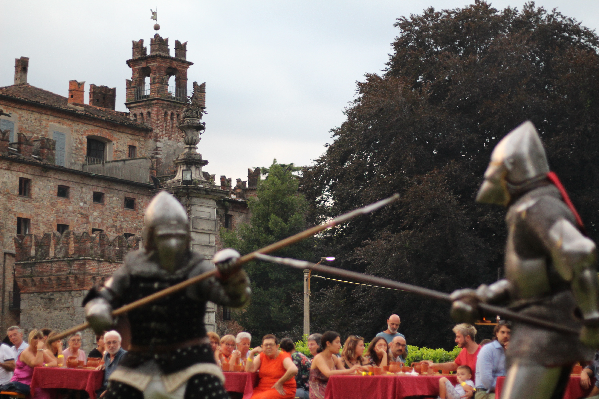
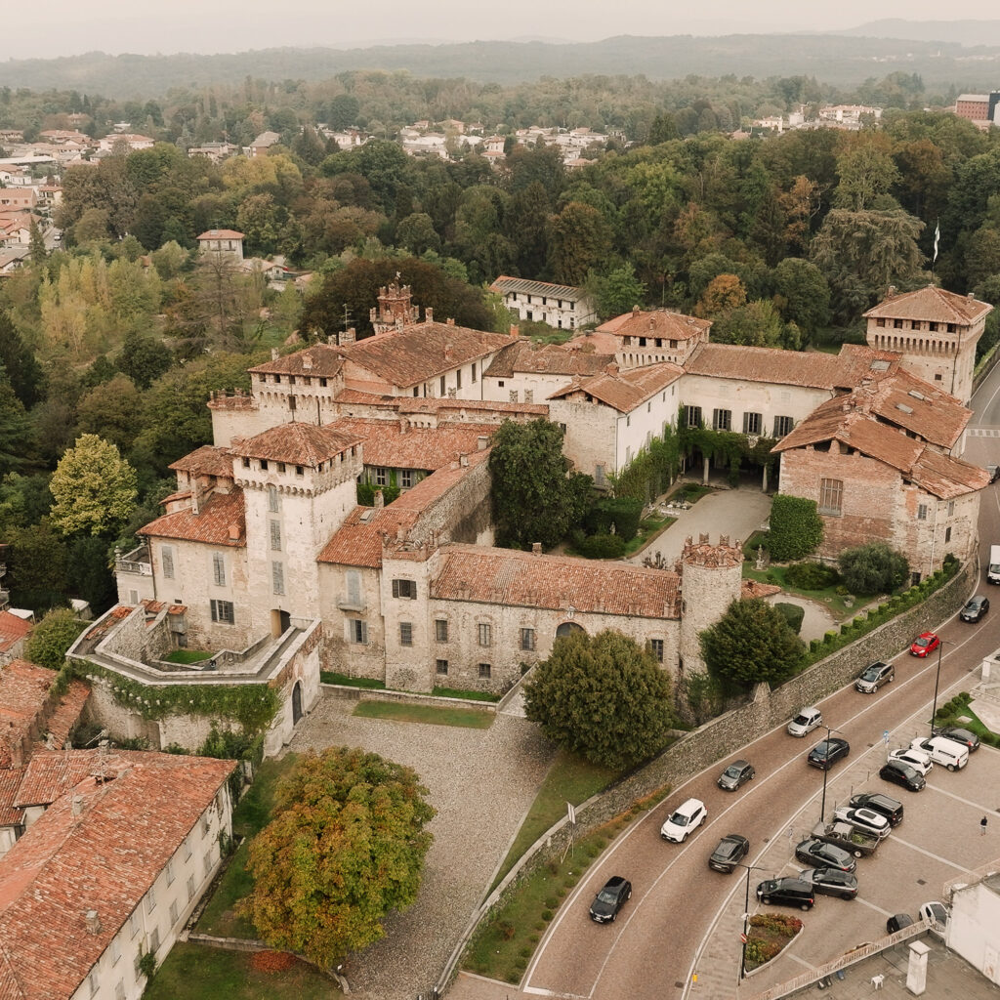
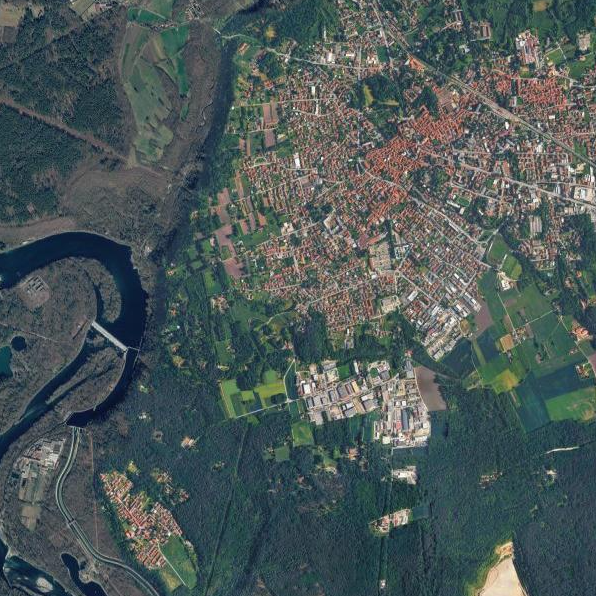
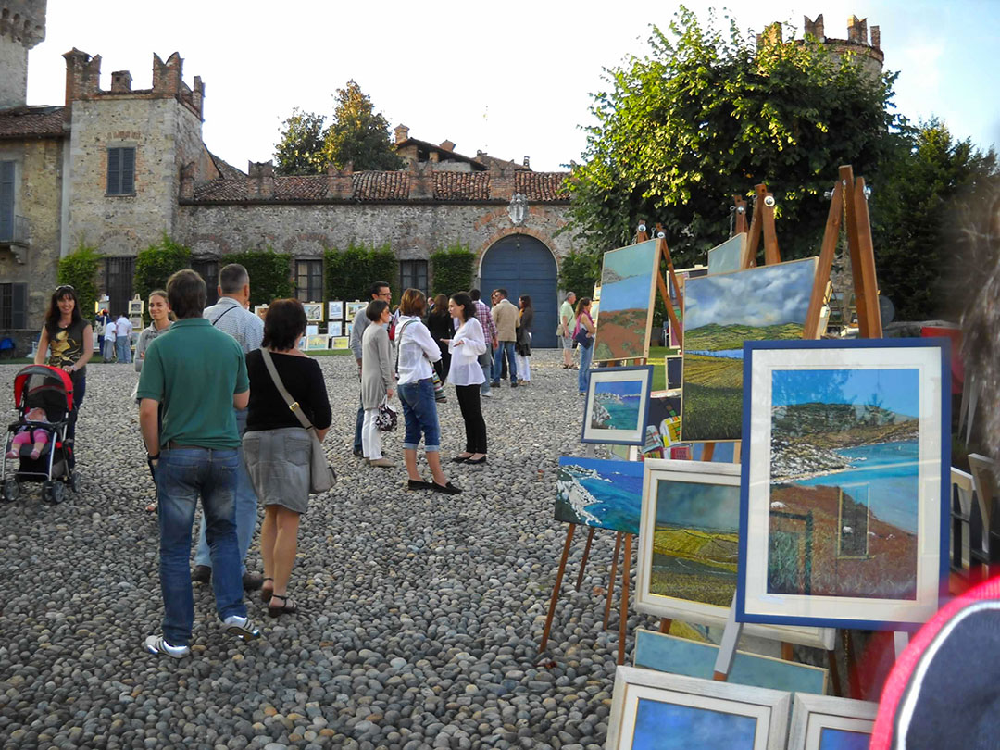

Gli eventi
Persone, storia, territorio
La Pro Loco organizza alcuni degli eventi più iconici della città, per riunire persone, storia e territorio, creare momenti di condivisione e divertimento
Scopri gli eventiBenvenuti
La Pro Loco è il punto d'incontro per chi ama la città, le sue storie e i momenti da condividere.

Iscriviti per non perdere date, progetti e occasioni.
In primo piano
Dai un'occhiata agli eventi in programma o contattaci per informazioni.
Raccogliamo iniziative
Ascoltiamo i cittadini, ci prendiamo cura della comunità.
Scrivici le tue idee o i tuoi suggerimenti
I nostri numeri

Gli eventi
La Pro Loco organizza alcuni degli eventi più iconici della città, per riunire persone, storia e territorio, creare momenti di condivisione e divertimento
Scopri gli eventi
Le iniziative
Corsi, laboratori, e attività di ogni tipo: la Pro Loco organizza moltissime iniziative rivolte ai soci e a tutta la comunità.
Scopri le iniziativeLa squadra è aperta
Diventa socio della Pro Loco Somma Lombardo.
Iscriviti oggi